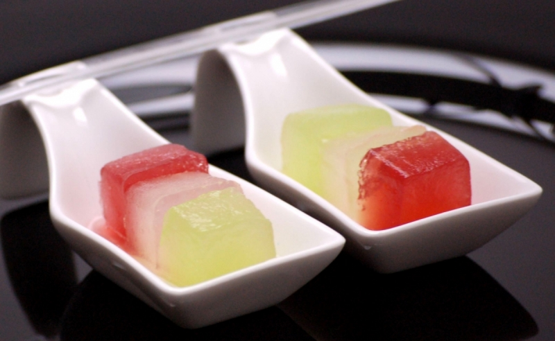

Glaçons mous (alcoolisés). 
 2h
2h- Difficulté :

- Technique(s) : Gélification
Ingrédients
Aa
Agar Agar
- 2g d'agar-agar
- 10 cL d'alcool
- 10 cL de liquide (eau, sirop, jus, etc.)
- 25g de sucre

Préparation
- Disperser l'Agar-agar mélangé au sucre dans le liquide et l'alcool. Porter à ébullition pendant 1 minute tout en remuant.
- Verser le mélange dans un bac à glaçons ou autre contenant résistant à la chaleur (en silicone). Laisser prendre en gel ou les congeler.
- Démouler et/ou couper en dés. 4. Servir en accompagnement ou dans une boisson.